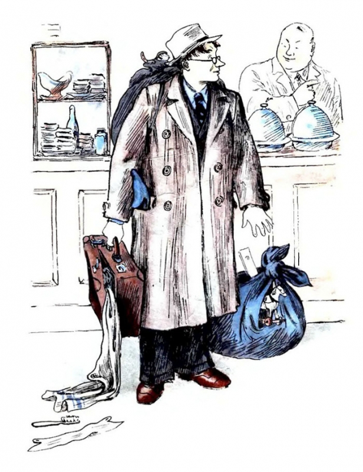
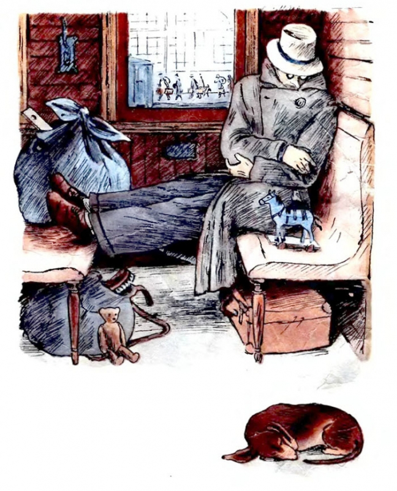

Жил человек рассеянный
На улице Бассейной.
Сел он утром на кровать,
Стал рубашку надевать,
В рукава просунул руки —
Оказалось, это брюки.
Вот какой рассеянный
С улицы Бассейной!
- Надевать он стал пальто —
- Говорят ему: не то.
- Стал натягивать гамаши —
- Говорят ему: не ваши.
- Вот какой рассеянный
- С улицы Бассейной!
Вместо шапки на ходу
Он надел сковороду.
Вместо валенок перчатки
Натянул себе на пятки.
Вот какой рассеянный
С улицы Бассейной!
- Однажды на трамвае
- Он ехал на вокзал
- И, двери открывая,
- Вожатому сказал:
- — Глубокоуважаемый
-
Вагоноуважатый!
-
Вагоноуважаемый
-
Глубокоуважатый!
- Во что бы то ни стало
- Мне надо выходить.
- Нельзя ли у трамвала
- Вокзай остановить?
- Вожатый удивился —
- Трамвай остановился.
- Вот какой рассеянный
- С улицы Бассейной!
- 
Он отправился в буфет
Покупать себе билет.
- А потом помчался в кассу
- Покупать бутылку квасу.
- Вот какой рассеянный
- С улицы Бассейной!
- 
Побежал он на перрон,
Сел в отцепленный вагон,
Внёс узлы и чемоданы,
Рассовал их под диваны,
Сел в углу перед окном
И заснул спокойным сном…
— Это что за полустанок?
Закричал он спозаранок.
А с платформы говорят:
— Это город Ленинград.
Он опять поспал немножко
И опять взглянул в окошко,
Увидал большой вокзал,
Удивился и сказал:
— Это что за остановка —
Бологое иль Поповка? —
А с платформы говорят:
Он опять поспал немножко
И опять взглянул в окошко,
Увидал большой вокзал,
Потянулся и сказал:
— Что за станция такая —
Дибуны или Ямская? —
А с платформы говорят:
— Это город Ленинград.
- Закричал он: — Что за шутки!
- Еду я вторые сутки,
- А приехал я назад,
- А приехал в Ленинград!
- Вот какой рассеянный
- С улицы Бассейной!